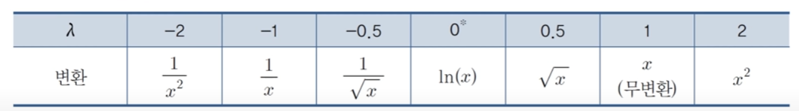
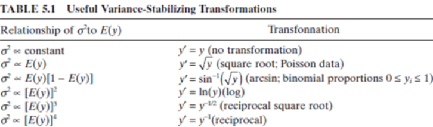

mean = resid.mean()
std = resid.std()
outlier_mask = (resid < mean - 3 * std) | (resid > mean + 3 * std)
influence = model.get_influence()
cooks = influence.cooks_distance[0]
influence = cooks > 4 / (len(resid) - model.df_model - 1)
outlier = resid[outlier_mask | influence].index
y_log = y.drop(outlier)
Xc = sm.add_constant(X.drop(outlier))
model = sm.OLS(y, Xc).fit()
resid = model.resid
print(model.summary())회귀분석 템플릿
데이터 분석
가정
- 선형성: 종속변수와 독립변수 간의 관계는 선형이다.
- 정규성: 종속변수 잔차들의 분포는 정규분포이다.
- 등분산성: 종속변수 잔차들의 분포는 동일한 분산을 갖는다.
- 독립성: 모든 잔차값은 서로 독립이다.
가정 검정
- 먼저 모델링을 진행한 후, 잔차를 통해 가정을 검정한다.
linear regression test
import statsmodels.api as sm
Xc = sm.add_constant(X)
model = sm.OLS(y, Xc).fit()
resid = model.resid
print(model.summary())이상치, 영향치 처리
- 레버러지(변수 내 다른 관측치들이랑 떨어진 정도) * 잔차
- Cook’s distance
- Leverage
- 그 외 DFFITS, DFBETAS 등
다중공선성 검정
- 전 변수 집합 대상
multicollinearity test
cor = df.corr()
cond_num = np.linalg.cond(cor)
print("Condition Number:", cond_num)- 30을 초과하면 다중공선성이 높다고 판단한다.
- 선형 종속 가능성을 봄.
- statsmodels의 ols를 사용해도 볼 수 있음
- scaling이 선행되어야 함.
- 초과 시 해석:
- 독립변수의 전체 차원이 부족한 경우
- 표본을 더 모으거나 새로운 변수를 도입
- 개별 변수의 계수 추정이 불안정한 경우(표본 오차가 큰 경우)
VIF test
import statsmodels.api as sm
from statsmodels.stats.outliers_influence import variance_inflation_factor
def check_vif(X, y):
X = sm.add_constant(X)
model = sm.OLS(y, X)
model.fit()
vif_df = pd.DataFrame(columns=['feature', 'VIF'])
for i in range(1, len(model.exog_names)):
vif_df.loc[i, 'feature'] = model.exog_names[i]
vif_df.loc[i, 'VIF'] = variance_inflation_factor(model.exog, i)
return vif_df.sort_values(by='VIF', ascending=False)
print(check_vif(X, y))- 특정 변수가 다른 변수들의 선형 결합으로 표현될 수 있는 경우
- VIF가 10을 넘을 경우
- 덜 중요하다면 제거
- 중요하다면 변수에 대한 독립적 정보 보강(세분화, …)
- 두 변수의 상관계수가 높은 경우
correlation heatmap
import seaborn as sns
fig, ax = plt.subplots(figsize=(12,12))
sns.heatmap(cor, annot=True, ax=ax)- 둘의 관계를 설명하는 제 3의 변수 도입(요인 분석 등)
- 둘 중 하나를 제거
정규성
- ols의 summary를 통해 확인 가능
- 혹은 EDA 과정에서 사용한 정규성 검정 참조
선형성, 등분산성 검정
import seaborn as sns
import matplotlib.pyplot as plt
sns.residplot(x=model.fittedvalues, y=model.resid, lowess=True,
line_kws={'color': 'red', 'lw': 2})
plt.show()- 선형성:
- 잔차도가 어떠한 패턴도 보이지 않아야 한다.
- 등분산성:
- 잔차도가 일정한 폭을 가져야 한다.
from statsmodels.stats.diagnostic import het_breuschpagan
# Breusch-Pagan 검정
lm, lm_pvalue, fvalue, f_pvalue = het_breuschpagan(resid, Xc)
print(f'Breusch-Pagan p-value: {lm_pvalue:.3f}')
# 잔차의 정규성 만족시 lm_pvalue, 그 외 f_pvalue 사용
if lm_pvalue > 0.05:
print("등분산성 가정을 만족합니다.")
else:
print("등분산성 가정을 위반합니다.")독립성
- 독립성은 검정은 연구자 주관에 판단하는 것이 일반적이라고 한다.
- 더빈-왓슨 검정을 사용할 수도 있지만, 1차 자기상관만 검정 가능하다.
- 2에 가까울수록 독립성 만족
- statsmodels의 ols로 확인 가능
전처리
- 범주형 변수 처리:
- 더미 변수화: 기준이 되는 범주를 하나 정하고, 나머지 범주를 0과 1로 표현
- 각 범주의 회귀계수는 기준 범주와의 차이를 의미
- 더미 변수화: 기준이 되는 범주를 하나 정하고, 나머지 범주를 0과 1로 표현
- 이상치 / 영향점: 관측값 제거
- 선형성 위반: 독립변수 변환, GAM
- 정규성 / 등분산성 위반: 종속변수 변환, GLM, GAM
- 다중공산성 위반: 다중공산성 파트 참고
- 혹은 변수 선택법을 사용
- 가정 만족할 때까지 검정, 전처리 계속 반복
변수 변환


- 최적의 λ는 최대 우도 추정법으로 구할 수 있다.
- 변수 변환은 예측력은 높일 수 있지만, 해석이 어려워질 수 있다.
- 일반적으로 box tidwell 검정을 사용하여 변환을 수행할 수 있지만 파이썬에서는 제공하는 라이브러리가 없다.
- 아마 양수 변수만 사용 가능한 단점과 다른 방법들이 많아서 그런 것 같다.
- 통계적 검정은 아니지만 box cox 변환을 사용하여 최적의 λ를 찾을 수 있다.
box cox transformation
from scipy.stats import boxcox
y_transformed, best_lambda = boxcox(y)
print(f"Best lambda: {best_lambda:.3f}")변수 선택법
- 전진 선택법
- 후진 선택법
- 단계적 선택법
- 최적조합 선택법: 모든 조합 다 해봄
- 기준
- R2, Adj R2
- AIC(Akaike Information Criterion): 모델에 변수를 추가할 수록 불이익을 주는 오차 측정법
- BIC(Bayesian Information Criterion): 변수 추가에 더 강한 불이익을 줌
- Mallows’ Cp
규제 선형 회귀
- 지나치게 많은 독립변수를 갖는 모델에 패널티를 부과하는 방식으로 간명한 모델을 만듦
- 독립변수에 대한 scaling이 선행되어야 함 (큰 변수에만 과하게 패널티가 부과될 수 있어서)
- 일반적으로는 scale을 하든 안하든 r square에 차이가 없다.
- 릿지회귀
- \(\Sigma (y_i - \hat{y_i})^2 + λ\Sigma β_j^2\)
- 회귀계수 절댓값을 0에 가깝게 함
- 하지만 0으로 만들지는 않음
- 작은 데이터셋에서는 선형 회귀보다 점수가 더 좋지만, 데이터가 충분히 많아지면 성능이 비슷해짐.
- 회귀계수가 모두 비슷한 크기를 가질 때 라쏘보다 성능이 좋음
- 라쏘회귀:
- \(\Sigma (y_i - \hat{y_i})^2 + λ\Sigma |β_j|\)
- 회귀계수를 0으로 만들 수 있음
- 변수 선택 효과
- 릿지보다 해석이 쉬움
- 일부 독립계수가 매우 큰 경우 릿지회귀보다 성능이 좋음
- 엘라스틱넷 회귀
- \(\Sigma (y_i - \hat{y_i})^2 + λ_1\Sigma |β_j| + λ_2\Sigma β_j^2\)
- 릿지와 라쏘의 장점을 모두 가짐
- 변수 선택 효과도 있고, 회귀계수를 0에 가깝게 만듦
- 독립변수 간에 상관관계가 있을 때, 그룹으로 선택하는 경향이 있음
일반화 선형 회귀(GLM)
- 종속변수가 이항분포를 따르거나 포아송 분포를 따르는 경우
- 이항분포: 평균이 np, 분산이 np(1-p), 즉 평균과 분산 사이에 관계가 존재하여 등분산성 가정을 만족하기 어렵다.
- 포아송 분포: 평균과 분산이 같아서 등분산성 가정을 만족하기 어렵다.
- 따라서 위와 같은 경우에 종속변수에 적절한 함수를 적용하여 등분산성 가정을 만족시킨다.
Logistic 회귀
- 종속변수가 범주형일 경우
- \(z = β_0 + β_1 x_1 + β_2 x_2 + ... + β_n x_n\)
- \(p = \frac{1}{1 + e^{-z}}\)
- 오즈: \(\frac{p}{1-p}\) = \(e^z\)
- 오즈비: 독립변수 k 단위 변화에 따른 오즈(양성 vs 음성)의 변화 비율
- \((e^{β_k})^k\)
- LLR의 p-value가 낮다면, 모델이 통계적으로 유의미함을 의미
- 잔차 검정은 안함
포아송 회귀
- 종속변수가 count 데이터일 경우
import statsmodels.api as sm
Xc = sm.add_constant(X)
model = sm.GLM(y, X, family=sm.families.Poisson())
fitted = model.fit()
print(model.summary())- \(x_k\)가 한 단위 증가할 때, 빈도 수가 \(exp(β_k)\)배 증가
- 만약 관찰 시간이 다를 경우, offset로 np.log(df[관찰시간])을 넣어줘야 함
- Deviance / DF_resid 가 1보다 크면 과산포, 작으면 과소산포
- 과산포: 사건발생 확률이 일정하지 않음
- 과산포 시 음이항 회귀 사용
음이항 회귀
import statsmodels.api as sm
Xc = sm.add_constant(X)
model = sm.GLM(y, Xc, family=sm.families.NegativeBinomial())
fitted = model.fit()
print(model.summary())- Quasi-Poisson도 있지만, statsmodels에서는 제공하지 않음